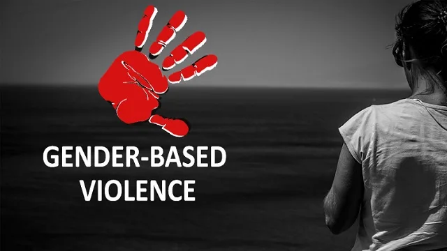

Expanded Nursing Uganda Explanation
Gender/sexual based violence should be reviewed through safe maternal and newborn assessment, early recognition of danger signs, respectful communication and timely referral. Connect the definition to vital signs, bleeding, fetal or newborn wellbeing, patient education and local protocol requirements.
Contents, 18 sections (tap to expand)
01 Gender Based Violence (GBV)
Gender based violence is any act that results in physical, sexual or psychological harm or suffering to women, men and children.
Key terms related to Gender-based Violence
1. Gender : Gender refers to the social and cultural expectations, roles, and behaviors assigned to men and women, boys and girls in a society. Unlike sex, which is biological, gender can vary greatly across different societies.
- Example : In many societies, it is more common for men to hold leadership positions than women, illustrating a gender role.
2. Gender-based Violence : This includes any act that causes physical, sexual, or psychological harm or suffering to women, men, and children. It can occur in public or private and includes threats and coercion.
- Example : Domestic abuse, where a partner uses physical or emotional harm to control the other, is a form of gender-based violence.
3. Violence Against Women : This refers to any act of gender-based violence that harms or is likely to harm women and girls, whether in private or public. It includes sexual violence.
- Example : Rape and sexual assault are forms of violence against women.
4. Sexual Violence, Exploitation, and Abuse : This includes any act, attempt, or threat of a sexual nature.
- Example : Forcing someone into sexual acts against their will is sexual violence.
5. Gender Equality : This is the state where men and women have equal rights, opportunities, and access to resources.
- Example : Ensuring that both men and women have equal access to education and job opportunities.
6. Gender Blind : A policy or plan that does not address relevant gender issues.
- Example : A workplace policy that does not consider the different needs of male and female employees, such as maternity leave.
7. Gender Responsiveness : A policy or plan with strategies to reduce inequality and ensure equal benefits for all genders.
- Example : A healthcare program that ensures both men and women have equal access to medical services.
8. Sexual and Gender-based Violence : This is a serious form of discrimination, particularly against women and children, and violates human rights. It is both a public health problem and a human rights issue.
- Example : Sexual harassment in the workplace is a form of sexual and gender-based violence.
9. Sex : This refers to the biological characteristics of males and females, limited to physiological reproductive functions.
- Example : Being born male or female is determined by biological sex.
10. Violence : Any act that causes injury, harm, intimidation, fear, damage, or humiliation to a person. It can include emotional, social, and economic force or pressure.
- Example : Threatening someone with a weapon or physically assaulting them is violence.
11. Sex Typing : The differential treatment of people based on their biological sex.
- Example : Assigning certain jobs only to men or women based on their sex.
12. Gender Equity : Ensuring that women and men, boys and girls have equal opportunities to receive services that are accessible to all.
- Example : Providing equal educational opportunities for both boys and girls.
13. Gender Sensitive : Being aware that women and men have different roles and needs, and planning accordingly.
- Example : Designing a workplace policy that considers the different needs of male and female employees.
14. Gender Neutrality : Planning for men and women without considering their different needs and roles, which can be ineffective.
- Example : A healthcare service that does not consider the specific needs of women, such as prenatal care.
15. Gender Roles : The tasks and responsibilities that society assigns to women and men, girls and boys. These roles can change over time and across different societies.
- Example : In some cultures, women are expected to be primary caregivers, while men are expected to be breadwinners.
16. Coercion : Forcing someone to engage in behavior against their will using threats, manipulation, or economic power.
- Example : Threatening to harm someone if they do not comply with your demands.
17. Sexual Preference/Orientation : A person’s preference for partners of the same or opposite sex.
- Example : Being heterosexual (attracted to the opposite sex) or homosexual (attracted to the same sex).
18. Gender Role Stereotype : Socially determined beliefs about what gender roles should be.
- Example : The belief that girls should be obedient and boys should be brave.
02 Forms of Violence in Uganda
Domestic Violence
- Wife Battering : Physical abuse of wives by their husbands.
- Oppression : Controlling behaviors that limit a partner’s freedom and autonomy.
- Intimidation : Using threats and fear to control a partner.
- Emotional Abuse : Verbal insults, humiliation, and constant criticism.
- Economic Abuse : Controlling a partner’s access to financial resources.
- Isolation : Preventing a partner from interacting with friends, family, or community.
Sexual Abuse
- Rape : Forced sexual intercourse without consent.
- Defilement : Sexual abuse of minors.
- Incest : Sexual relations between family members.
- Sexual Exploitation : Taking advantage of someone’s vulnerability for sexual purposes.
- Sexual Harassment : Unwanted sexual advances, requests for sexual favors, and other verbal or physical harassment of a sexual nature.
Harmful Cultural Practices
- Female Genital Mutilation (FGM) : Partial or total removal of external female genitalia for non-medical reasons.
- Widow Inheritance : Forcing a widow to marry a relative of her deceased husband.
- Bride Price : Payment made by the groom’s family to the bride’s family, often leading to the commodification of women.
- Child Marriage : Marrying off young girls, often for economic reasons or cultural beliefs.
Forced Marriages
- Economic Purposes : Marrying off girls for financial gain, such as bride price.
- Cultural Beliefs: The belief that girls are destined for marriage rather than education.
- Social Pressure : Families forcing marriages to maintain social status or avoid stigma.
- Lack of Education : Limited access to education leading to early marriage as the only perceived option.
Other Forms of Violence
- Sexual Harassment and Intimidation : Occurring in workplaces, religious institutions, and schools.
- Coercion : Forcing someone to act against their will through threats or manipulation.
- Arbitrary Deprivation of Liberty : Unjustified detention or restriction of movement.
- Belief in Large Families : Pressure to have many children, leading to health risks and economic strain.
- Forced Sex : Men having non-consensual sex with their partners.
- Institutional Violence : Violence perpetrated or condoned by institutions such as the government or religious bodies.
03 Settings Where Gender-Based Violence Can Occur
Family
- Battering of Women : Physical abuse within the home.
- Sexual Abuse of Children : Incest and other forms of sexual abuse within the family.
- Emotional Abuse : Verbal and psychological harm inflicted by family members.
- Neglect : Failure to provide basic needs such as food, shelter, and healthcare.
Community
- Sexual Abuse : Rape, defilement, and other forms of sexual violence.
- Sexual Harassment and Intimidation : Unwanted sexual advances and threats.
- Trafficking : Exploitation for labor or sexual purposes.
- Forced Prostitution : Coercing individuals into sex work.
- Mob Violence : Community-based violence targeting individuals or groups.
State
- Poorly Drafted or Unenforceable Laws : Legal frameworks that do not adequately protect victims.
- Violence by Law Enforcement : Abuse of power by police and other authorities.
- Lack of Facilities : Inadequate healthcare and support services for victims.
- Education : Insufficient education on prevention and treatment of violence.
- Corruption : Officials taking bribes to ignore or condone violence.
04 Predisposing Factors of Sexual and Gender-Based Violence
Socio-Economic Factors
- Low Socio-Economic Status : Poverty and lack of education increasing vulnerability.
- Women’s Low Status : Cultural and social norms that devalue women.
- Dependence on Men : Economic and decision-making dependence.
Cultural Factors
- Infertility : Blaming and abusing women for not being able to have children.
- Fear of Reporting : Victims afraid to report due to lack of support and fear of reprisal.
- Gender Roles: Traditional roles that limit women’s autonomy and expose them to violence.
- Harmful Practices : FGM, early marriage, and widow inheritance.
Health and Disability Factors
- Physical and Mental Disabilities : Increased risk of abuse and stigmatization.
- Ill Health : Especially from HIV/AIDS, leading to vulnerability.
- Poverty : Economic hardship leading to exploitation.
- Idleness : Unemployment and lack of productive activities leading to substance abuse.
Environmental Factors
- Abduction : Kidnapping leading to sexual abuse and exploitation.
- Land Wrangle : Property disputes leading to violence against women.
- Conflict : War and displacement increasing vulnerability.
- Poor Role Modeling : Lack of positive examples for children.
05 Risk Groups for Sexual and Gender-Based Violence
Vulnerable Populations
- All Children and Women : Higher risk due to power imbalances and cultural norms.
- Adolescents : Vulnerable to peer pressure and exploitation.
- Displaced Persons : Including refugees and internally displaced people.
- People with Disabilities : Increased risk of abuse and neglect.
- Prisoners : Vulnerable to abuse by authorities and other inmates.
- Men : Often reluctant to report violence due to fear of stigma.
- Pregnant Mothers : Vulnerable to domestic violence and lack of support.
Specific Risk Factors
- Economic Dependence : Lack of financial independence.
- Social Isolation : Lack of support networks.
- Cultural Norms : Beliefs that justify violence against women.
- Legal Gaps : Inadequate laws and enforcement.
- Health Issues: Physical and mental health problems increasing vulnerability.
- Education : Lack of awareness and education on rights and protections.
Domestic Violence
This term specifically refers to violence that occurs within the domestic sphere, typically between individuals who are related by blood or intimacy . It includes intimate partner violence (IPV) and can also encompass violence against children, siblings, or grandparents within the same household. Domestic violence is a subset of GBV and is one of the most common forms of GBV.
Domestic violence is a specific form of GBV that occurs within the family or intimate relationships, GBV is a broader concept that encompasses any form of violence directed at individuals based on their gender.
06 Reasons for Staying in an Abusive Relationship
Hope for Change :
- Belief that the abuser will change their behavior.
- Optimism that the relationship can improve.
- Faith in the abuser’s promises to stop the abuse.
Total Love for the Partner :
- Deep emotional attachment to the abuser.
- Strong feelings of love and commitment.
- Belief that love can conquer all problems.
Fear of Losing the Marriage :
- Concerns about the social stigma of divorce.
- Fear of being alone or single.
- Worries about the impact on children and family.
Purpose of the Children :
- Staying for the sake of the children’s well-being.
- Belief that children need both parents.
- Fear of disrupting the children’s lives.
Shame :
- Embarrassment about the abuse.
- Fear of judgment from family, friends, and society.
- Concerns about being blamed for the abuse.
Poverty – Fear of Returning the Bride Price :
- Financial dependence on the abuser.
- Fear of economic hardship if the relationship ends.
- Cultural obligations to return the bride price, which can be a financial burden.
Security Purpose :
- Dependence on the abuser for financial and physical security.
- Fear of losing a stable home and lifestyle.
- Belief that the abuser provides necessary protection.
Lack of Support :
- Isolation from friends and family.
- Lack of a support system to help leave the relationship.
- Fear of being alone without emotional and practical support.
Cultural and Social Pressure :
- Pressure from society to maintain the relationship.
- Cultural beliefs that prioritize marriage and family unity.
- Fear of being ostracized by the community.
Fear of Retaliation :
- Fear that the abuser will become more violent if the victim tries to leave.
- Concerns about the abuser harming the victim, children, or other family members.
- Fear of the abuser stalking or harassing the victim after leaving.
Low Self-Esteem :
- Belief that the victim deserves the abuse.
- Feelings of worthlessness and inadequacy.
- Lack of confidence in the ability to live independently.
Lack of Alternatives :
- Limited options for housing, employment, and financial support.
- Fear of homelessness or poverty if the relationship ends.
- Belief that there are no better alternatives to the current situation.
07 Characteristics of Those Who Are Abused
Belief That Violence Gives Immediate Results :
- The abuser believes that violence is an effective way to control and dominate the victim.
- The abuser uses violence to achieve immediate compliance and obedience.
Insecure, Extremely Jealous, and Possessive :
- The abuser feels threatened by the victim’s independence and relationships with others.
- The abuser exhibits extreme jealousy and possessiveness, often accusing the victim of infidelity.
Emotionally Dependent on the Partner :
- The abuser relies on the victim for emotional support and validation.
- The abuser feels a strong need to control the victim to maintain emotional stability.
Denial That Their Actions Are Violent :
- The abuser minimizes or denies the severity of their actions.
- The abuser blames the victim for provoking the violence.
- The abuser refuses to take responsibility for their abusive behavior.
Poor Impulse Control :
- The abuser has difficulty managing anger and frustration.
- The abuser acts impulsively and aggressively without considering the consequences.
- The abuser struggles with emotional regulation and self-control.
Manipulative and Controlling :
- The abuser uses manipulation and control tactics to maintain power over the victim.
- The abuser isolates the victim from friends and family to increase dependence.
- The abuser uses guilt, shame, and fear to control the victim’s behavior.
History of Abuse or Trauma :
- The abuser may have experienced abuse or trauma in their past.
- The abuser may repeat patterns of abuse learned from their upbringing or past relationships.
- The abuser may have unresolved emotional issues that contribute to their abusive behavior.
Lack of Empathy :
- The abuser shows little or no concern for the victim’s feelings and well-being.
- The abuser is unable or unwilling to understand the impact of their actions on the victim.
- The abuser prioritizes their own needs and desires over the victim’s.
08 Impacts of Sexual and Gender-Based Violence
Sexual and gender-based violence (SGBV) has profound and lasting effects on survivors, impacting their physical, mental, and social well-being. The impacts can be categorized into physical, psychological, social, and economic dimensions.
Physical Impacts
Injuries :
- Bruises, fractures, and internal injuries.
- Long-term physical disabilities and chronic pain.
- Scars and disfigurement.
Sexually Transmitted Infections (STIs) :
- Increased risk of contracting STIs, including HIV/AIDS.
- Long-term health complications from untreated STIs.
- Stigma and discrimination associated with STIs.
Unwanted Pregnancies :
- Risk of unsafe abortions, leading to lifelong health effects and potential death.
- Complications during pregnancy and childbirth.
- Emotional and financial burden of raising a child from an abusive relationship.
Chronic Health Issues :
- Long-term health problems such as chronic pain, headaches, and gastrointestinal issues.
- Weakened immune system and increased susceptibility to illnesses.
- Cardiovascular problems and hypertension.
Psychological Impacts
Mental Health Issues :
- Depression and anxiety.
- Post-traumatic stress disorder (PTSD).
- Suicidal thoughts and attempts.
Low Self-Esteem :
- Feelings of worthlessness and inadequacy.
- Loss of confidence and self-worth.
- Difficulty trusting others and forming healthy relationships.
Trauma and Fear :
- Constant fear and hypervigilance.
- Nightmares and flashbacks.
- Difficulty sleeping and concentrating.
Substance Abuse :
- Turning to drugs or alcohol to cope with trauma.
- Increased risk of addiction and related health problems.
- Social and economic consequences of substance abuse.
Social Impacts
Isolation :
- Withdrawal from social activities and relationships.
- Loss of friends and support networks.
- Difficulty forming new relationships due to trust issues.
Stigmatization :
- Social judgment and blame.
- Difficulty reintegrating into society.
- Fear of disclosure and seeking help due to stigma.
Family Disruption :
- Breakdown of family relationships.
- Impact on children, including behavioral and emotional problems.
- Difficulty maintaining stable housing and employment.
Economic Impacts
Poverty :
- Loss of income and financial stability.
- Difficulty finding and maintaining employment.
- Increased dependence on social services and support.
Loss of Livelihood :
- Difficulty pursuing education and career goals.
- Loss of job opportunities and professional advancement.
- Economic strain from medical expenses and legal fees.
Housing Instability :
- Difficulty finding and maintaining safe and stable housing.
- Risk of homelessness or living in unsafe conditions.
- Financial burden of relocating and starting over.
Long-Term Effects
Intergenerational Trauma :
- Impact on future generations, including increased risk of abuse and violence.
- Cycle of violence and trauma passed down through families.
- Long-term effects on community and societal well-being.
Community Impact :
- Increased strain on social services and healthcare systems.
- Economic burden on communities and societies.
- Decreased productivity and increased social unrest.
Legal and Justice System :
- Challenges in accessing justice and legal support.
- Difficulty navigating the legal system and seeking redress.
- Fear of reporting abuse due to lack of trust in the justice system.
09 Ways through which Sexual Gender-based Violence can be reduced in Uganda
Sexual and gender-based violence should be recognized as an important public health matter. Therefore, everyone in the community can contribute tremendously to reducing the acts of sexual gender-based violence by actively doing the following:
- Leaders should spearhead sensitization of communities on the impacts of sexual gender-based violence throughout the country.
- Reporting all acts of violence to the health centers, police, and other relevant authorities.
- Ensuring that those who commit these acts are punished appropriately.
- Some of the current measures to punish the perpetrators should be revised and made stronger to deter people from committing acts of violence.
- Communities should be encouraged to stop the culture of silence which hampers victims from reporting fearing the repercussions e.g. imprisonment and stigmatization.
- Advocacy to reduce sexual and gender-based violence must be intensified at all levels.
- Review the legal systems to improve the court relationship between the legal officers and the victims.
- Improve the relationship between the legal and other practitioners during court session.
- Health workers should be supported to undertake their roles to manage and care for survivors of Sexual Gender-based Violence.
10 Roles of leaders on SGBV in their community
The following ways can be used by leaders to fight Sexual Gender-based Violence by:
- Speaking out against Sexual Gender-based Violence at every opportunity for instance during community meetings, campaigns, fundraising, funerals, drinking places.
- Leaders should strive to act as role models by avoiding being perpetrators of SGBV.
- Assisting victims to get help and to see that the culprits such as defilers, rapists, men who batter their wives are reported to the police and punished appropriately.
- Leaders can form counseling groups to help men, children and women who are perpetrators of Sexual Gender-based Violence.
11 Control and prevention of Sexual Gender-based Violence
- Improve girl child education at all level.
- Reducing the high level of poor socio-economic status will in long run reduce women vulnerability to violence.
- Increasing awareness of women‘s rights and responsibilities related to owning property and assets.
- Reviewing and amending laws that safeguard women‘s rights.
- Strengthening nationwide/community wide efforts to challenge the widespread tolerance and acceptance of violence against women.
- Encouraging parents to bring up children who respect the rights of individuals as men or women, boys or girls
- Supporting parents to bring up their boys and girls as equal partners
12 Reasons Why the Community and Leaders Should Be Concerned About SGBV
Damages Social Bonds :
- Isolation of Victims : Women and girls who are sexually abused often isolate themselves or are isolated by their families and communities, leading to a breakdown in social cohesion.
- Community Division : The stigma and shame associated with SGBV can create divisions within communities, affecting trust and cooperation.
- Social Exclusion : Victims may face social exclusion, further damaging community bonds and support networks.
- Intergenerational Impact : The trauma experienced by victims can affect future generations, perpetuating a cycle of abuse and social dysfunction.
Substantial Health Burden :
- Difficult Diagnosis and Treatment : Victims often present with vague complaints that are challenging to diagnose and treat, placing a significant burden on healthcare systems.
- Mental Health Issues: SGBV survivors frequently suffer from mental health problems such as depression, anxiety, and post-traumatic stress disorder (PTSD), requiring long-term psychological support.
- Physical Health Problems : Victims may experience chronic pain, sexually transmitted infections (STIs), and other physical health issues that require ongoing medical care.
- Reproductive Health : SGBV can lead to unwanted pregnancies, unsafe abortions, and reproductive health complications, further straining healthcare resources.
Economic Loss :
- Loss of Productivity : Victims of SGBV, due to physical injury or emotional stress, are often unable to fulfill their roles in households and workplaces, leading to economic loss.
- Financial Burden : The cost of medical treatment, legal proceedings, and support services for victims can be substantial, placing a financial burden on households and communities.
- Reduced Economic Contribution : In many Ugandan villages, women are key breadwinners. SGBV can significantly reduce their economic contribution, affecting family income and community development.
- Long-Term Economic Impact : The economic repercussions of SGBV can be long-lasting, affecting future generations and hindering economic growth and development.
Legacy of Bitterness :
- Conflict Situations : SGBV can exacerbate tensions in conflict situations, creating a legacy of bitterness and resentment towards the group from which the perpetrators came.
- Negative Impact on Reconciliation : The bitterness and mistrust resulting from SGBV can hinder reconciliation efforts and community reconstruction, prolonging conflict and instability.
- Cycle of Violence : The bitterness and desire for revenge can perpetuate a cycle of violence, making it difficult to achieve lasting peace and stability.
- Community Polarization : SGBV can polarize communities, making it challenging to foster unity and cooperation.
Legal and Justice System Strain :
- Increased Caseload : SGBV cases can overwhelm the legal and justice system, leading to delays and inefficiencies in handling other cases.
- Resource Allocation: Addressing SGBV requires significant resources, including trained personnel, infrastructure, and support services, which can strain limited resources.
- Public Trust : Failure to adequately address SGBV can erode public trust in the legal and justice system, undermining its effectiveness and legitimacy.
Educational Impact :
- School Dropout : Victims of SGBV, particularly girls, may drop out of school due to trauma, stigma, or pregnancy, affecting their education and future prospects.
- Learning Environment : SGBV can create a hostile learning environment, affecting the educational outcomes of all students.
- Teacher-Student Relationships : SGBV can damage trust between teachers and students, making it difficult to provide a safe and supportive educational environment.
Cultural and Social Norms :
- Perpetuation of Harmful Practices : SGBV can reinforce harmful cultural and social norms, such as gender inequality and patriarchal attitudes, perpetuating a cycle of abuse.
- Challenge to Traditional Values: Addressing SGBV may require challenging deeply ingrained cultural and social norms, which can be met with resistance and backlash.
- Community Values: SGBV can undermine community values of respect, dignity, and equality, affecting the overall well-being and cohesion of the community.
13 Roles of health workers in managing victims and addressing gender-based violence
This is important to note that health workers play instrumental roles in ensuring that families and victims of gender-based violence are professionally attended and see that the victims get justice. Therefore, the following cited are some of roles of health worker in gender-based violence management;
- Offering psychosocial support and counseling services to the affected families and individuals.
- Liaising with people and other stakeholders to see that the perpetrator (culprits) is brought to book to prevent possibility of reoccurrences.
- Collecting victim‘s medical information and performing required medical examination to promote continuity of care.
- Creating a friendly and confidential environment (shelter) where victims needs are addressed.
- Offering timely and appropriate referral services as needed.
- Establishing and promoting strict reporting of all gender-based violence related cases to responsible authority and ensure victims get fair justice.
- Ensuring and maintaining constant follow-up care of all affected families or victims.
14 Sources of Help for Victims of SGBV
Police :
- Reporting and Investigation : Victims can report incidents of SGBV to the police, who are responsible for investigating and taking legal action against perpetrators.
- Protection and Support : Police can provide immediate protection and support to victims, including referrals to other services.
Probation Officers :
- Rehabilitation and Monitoring : Probation officers can monitor perpetrators and provide rehabilitation services to prevent future incidents of SGBV.
- Victim Support : Probation officers can also support victims by ensuring that perpetrators comply with court orders and conditions of probation.
Child and Family Protection Unit :
- Specialized Services : This unit provides specialized services for children and families affected by SGBV, including counseling, legal support, and referrals to other services.
- Child Protection : The unit focuses on protecting children from abuse and ensuring their well-being and safety.
Local Leaders/Elders :
- Community Support: Local leaders and elders can provide support and advocacy for victims within the community, helping to address SGBV at the local level.
- Mediation and Reconciliation : Local leaders can facilitate mediation and reconciliation efforts to address SGBV and promote community healing.
Trusted Person or Family Members :
- Emotional Support : Trusted individuals or family members can provide emotional support and a safe space for victims to share their experiences and seek help.
- Practical Assistance : They can also offer practical assistance, such as helping victims access services and navigate the legal system.
Counselors :
- Psychological Support : Counselors provide psychological support to help victims cope with the trauma of SGBV, including therapy and emotional healing.
- Long-Term Support : Counselors can offer long-term support to help victims rebuild their lives and overcome the effects of SGBV.
Healthcare Providers :
- Medical Care : Healthcare providers can offer medical care and treatment for physical injuries and health complications resulting from SGBV.
- Mental Health Services: They can also provide mental health services to address the psychological impact of SGBV.
Legal Aid Services :
- Legal Representation : Legal aid services can provide victims with legal representation and support to navigate the legal system and seek justice.
- Advocacy : They can also advocate for victims’ rights and ensure that their voices are heard in legal proceedings.
Non-Governmental Organizations (NGOs) :
- Comprehensive Support : NGOs can offer comprehensive support services, including counseling, legal aid, and advocacy for victims of SGBV.
- Community Outreach : NGOs can engage in community outreach and awareness campaigns to educate the public about SGBV and promote prevention efforts.
Support Groups :
- Peer Support: Support groups can provide a safe and supportive environment for victims to share their experiences, receive peer support, and build a network of solidarity.
- Empowerment : Support groups can empower victims to speak out against SGBV and advocate for change in their communities.
Note: In some African cultures, beating a woman or girls is part of the disciplining process; in fact some women even willingly accept to be beaten
15 Nursing Uganda Clinical Lens
Use Gender/sexual based violence as a practical nursing topic, not only a memorized definition. Read the topic through the safety of two patients: the mother and the fetus or newborn.
- What to understand first: define gender/sexual based violence, identify the normal or expected pattern, then explain what changes when the patient is unwell.
- Why it matters in care: the nurse must recognize risk early, explain findings clearly, document accurately and know when to escalate.
- How to revise it: connect each point to assessment, nursing diagnosis or care problem, intervention, rationale and evaluation.
16 Assessment Guide
- Maternal vital signs, bleeding, pain, contractions, uterine tone and danger signs.
- Fetal or newborn wellbeing, feeding, temperature, breathing and activity.
- History of pregnancy, parity, medications, allergies, investigations and referral risks.
17 Nursing Priorities, Rationales and Outcomes
- Recognize danger signs early and escalate without delay.
- Provide respectful communication, privacy, infection prevention and clear documentation.
- Teach the mother what to monitor at home and when to return urgently.
The rationale for these priorities is patient safety: nursing actions should prevent deterioration, reduce discomfort, support recovery and create clear evidence for the next caregiver.
- Expected outcome: Mother and baby remain stable, danger signs are acted on early, and the family understands follow-up instructions.
18 Patient Teaching and Revision Check
- Explain gender/sexual based violence in simple language the patient or caregiver can repeat back.
- Teach warning signs, medicine or follow-up instructions, hygiene or lifestyle points where relevant.
- For exams, prepare a short answer using: definition, causes or risk factors, signs, assessment, management, complications and prevention.
- For ward practice, document baseline findings, actions taken, patient response and the plan for review.
Illustrations and Diagrams (3)



Related Video Lectures
Watch nursing lecture videos on YouTube for this topic. Opens in a new tab.
Watch on YouTubeExternal link: YouTube may use its own cookies and terms. Nursing Uganda is not affiliated with YouTube.